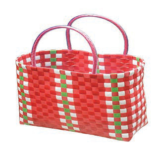

Nylon string or sisal rope scraps materials
Sisal or nylon ropes are easy to weave and are used to make various types of durable baskets. Figures 17 and 18 show baskets made from sisal and nylon rope scraps.


Steps for making baskets using sisal or nylon ropes
- Prepare the necessary materials such as sisal or nylon ropes, scissors, a large needle or a weaving tool;
- Cut your ropes according to the size you want for the basket;
- Create the base of the basket by winding the rope into a circular or rectangular shape to form the foundation;
- Use the needle to sew the rope together in order to secure the turns of the base;
- Build the walls of the basket by weaving the rope upwards from the base. Ensure the rope turns are tightly secured using the needle or weaving tool; and
- Finalise the basket by tightening the final rounds for it to be strong.